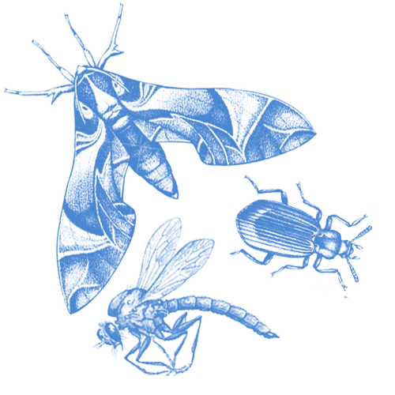

The Orchard Oriole swaps the typical flame-orange of other orioles for a deep, burnished russet. Hopping among riverine shrubs or scattered trees, male Orchard Orioles sing a whistled, chattering song to attract yellow-green females. The smallest of North America’s orioles, it gleans insects from foliage and builds hanging, pouchlike nests during its brief breeding season, and then heads back to Central America for the rest of the year. Orchard Orioles also feed on fruit and nectar in orchards, gardens, and elsewhere.
Orchard Orioles eat mostly insects and other arthropods, along with some fruit and nectar. They glean prey from the foliage, including parasitic wasps, ants, bugs, caterpillars, grasshoppers, crickets, beetles, mayflies, and spiders. They drink nectar from flowers (and hummingbird feeders). Sometimes they dip their head into the flower opening, picking up pollen along the way; other times they take a more direct route, piercing flowers such as trumpet creepers and black locust at their bases and bypassing the pollen. Their diet shifts to mostly fruit just before fall migration. Migrating flocks forage on ripe mulberries, chokecherries, and other berries. On their Central American wintering grounds they feed on fruits, nectar, and pollen.
Look for Orchard Orioles in open woodlands along river edges, as well as along marsh edges, lakeshores, open shrublands, and farms. In open habitats they nest in scattered trees, including large trees planted for shade. Orchard Orioles winter in thickets, tropical forest edges, plantations, shady pastures, and lightly wooded areas—at a range of elevations up to a mile or more above sea level.
Orchard Orioles build nests in a variety of tree species, including maple, ash, cottonwood, willow, elm, white pine, Norway spruce, oak, magnolia, and pecan. The nests are usually attached to forked twigs or branches away from the main trunk, at varying heights from the ground.
The female does most of the nest building, completing the project in about 6 days. Suspended from a forked twig, the nest is woven from long blades of green grass that turn yellow as they dry, and usually lined with fine grasses, plant down, catkins, cotton, animal wool, bits of yarn, and feathers. It measures about 4 inches across and 3 inches deep on the outside, with an inner cup measuring 2.5 inches across and 2 inches deep. The eggs are usually visible through the loosely woven nest bottom.